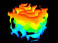

"Jellyfish Head" (movie) by Michael Parker.
"Curtains of Fire 1" by Jerry Thornhill
"Curtains of Fire 2" by Jerry Thornhill
"Throne for a Baroque Pearl" by David Parker.

"Devourer" (movie) by Michael Parker.
"Octahedron" by Jerry Glynn.
| DPGraph Math Art Gallery Page 2 |
| Home | Buy | Free Viewer | Legacy Site Licensees Latest news: 12 Nov 2017 | Update to newest version: 19 Dec 2016 Math Art Gallery | Documentation | Links | Privacy | Contact |
More pages of beautiful math art thumbnails:
Newest
13
12
11
10
9
8
7
6
5
4
3
2
Oldest
DPG files: Alphabetically by contributor | Alphabetically by title of graph
"Jellyfish Head" (movie) by Michael Parker. |
 "Curtains of Fire 1" by Jerry Thornhill |
"Curtains of Fire 2" by Jerry Thornhill |
"Throne for a Baroque Pearl" by David Parker. |
"Devourer" (movie) by Michael Parker. |
"Octahedron" by Jerry Glynn. |
"Octahedron" by Владимир Смирнов (Vladimir Smirnov). |
"Rhombohedron" by Владимир Смирнов (Vladimir Smirnov). |
"Icosahedron" by Владимир Смирнов (Vladimir Smirnov). |
"Stellated Octahedron" by Владимир Смирнов (Vladimir Smirnov). |
"Icosahedron" by Владимир Смирнов (Vladimir Smirnov). |
"4D Hypersurface" (movie) by Hassan Sedaghat. |